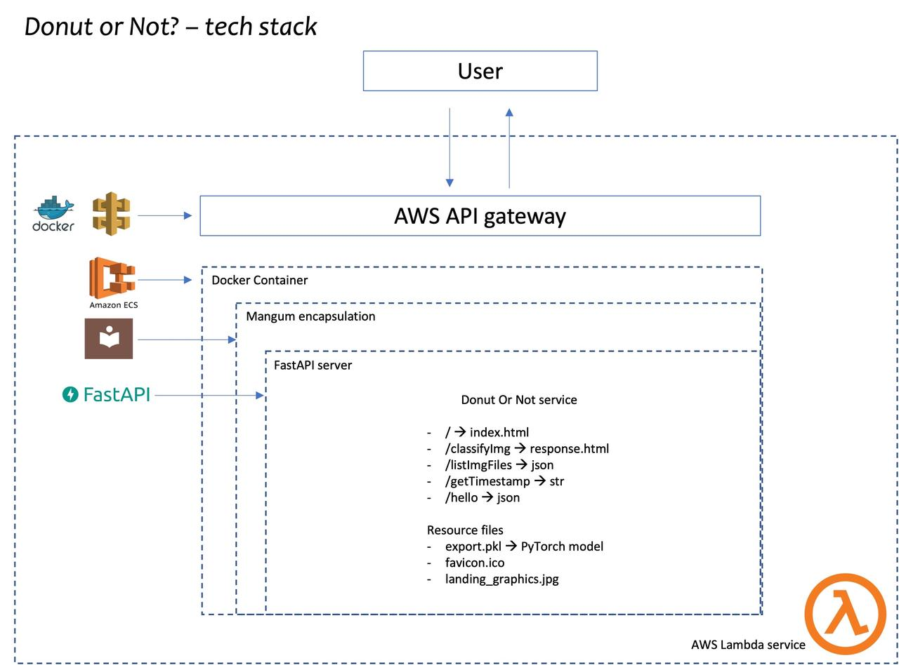

Donut or Not! - Deploying Deep Learning Inference as Serverless Functions
There is a common myth that to perform deep learning, one needs high compute, GPU enabled devices. While this is true to a degree, when training deep learning models, it is often just as possible to perform inference using simple CPU based architectures in compute and memory constrained environments - such as serverless functions. This blog takes you through my journey of deploying a simple donut vs bagel vs vada classifier as a AWS Lambda function!
Checkout the function at bit.ly/donutornot.¶
At a high-level, this application consists of a deep learning model that was trained using Fastai using a resnet32 backbone and exported as a PyTorch model. The model is invoked by a REST API defined using FastAPI library. The whole service is packaged into a Docker image and pushed up to Amazon’s AWS ECR container registry. This is then used by a AWS Lambda service to create a function and exposes it using an AWS API gateway, which gives a URL to the service. The HTML front-end is created using Jinja2 templating, something that is common and well established when using micro-frameworks like Flask or FastAPI (as in this case).
The picture below shows the technology stack that powers this app.

How to guide¶
Surprisingly, the training aspects of this model was relatively simpler and predictable. However, it took a lot of reading, trial and error and experimentation to get the serverless application running. The GitHub repo at https://github.com/AtmaMani/donut_or_not has all the set up and deployment information. So, if that’s what you are looking for, please head there.
Things I learnt¶
I wanted to write this blog to share my experience creating this app and also take stock of the current state of things when it comes to serverless deep learning. So, here are some observations.
- This project was possible because AWS announced support for authoring Lambda functions using Docker images. Not just any images, but they provided the exact same images they use behind the scenes. AWS also expanded the image size limit to
10GB. Since the base images are slim to begin with, this large size allowance permits developers to install most of the libs needed for performing data science. - AWS SAM CLI makes it possible to create a template suitable for machine learning. While it gives us a framework, I found this to be bare-bones and not sufficiently furnished for someone to get started quickly, particularly for someone who is not a cloud engineer.
- It took me multiple attempts to figure out how to get the dependencies successfully install on the image. I finally settled with an approach of specifying certain deps in the
requirements.txtand certain others to install directly viaDocker RUNcommand. This seems approach seems fragile to me. - Once the dependencies were installed, it took several attempts to get the FastAPI service run via Docker. I had problems understanding how to codify my endpoints in SAM’s
template.ymlfile. Since my app allows users to upload a JPG (a binary file), I had to read through several StackExchange comments and SAM’s GitHub issues to figure out how to specify the MIME type. It appeared quirky and I would have liked this supported out-of-the-box, as it is with Heroku. - Once the FastAPI service started running, I ran into a few permission denial issues. Apparently, Lambda runs the container with a user with minimal privileges, unlike the local runtime emulator. Thus, I ended up with new errors that crop up in production, but not in local dev env.
However, this was a great learning experience and now I have a template to follow, if I were to deploy additional models to production. I have a method to perform deep learning inference via a low-cost, low-maintenance, on-demand manner using serverless cloud infrastructure.
I hope this blog and GitHub repo is useful for others who are attempting to do the same.